AI?

| think like humans |
think rationally |
| act like humans |
act rationally |
Turing's Test
A computer would deserve to be called intelligent if it could deceive a human into believing that it was human.
— Alan Turing
What does it take to create AI?
Human "senses" necessary for most task:
- Speaking / Hearing
- Seeing
- Experience / Knowledge
- Logical Deductions
- Motion (walking, lifting, ...)
Necessary "computational" properties
- Natural Language Processing (NLP)
- Computer Vision
- Knowledge Representation
- Automated Reasoning
- Machine Learning
- Robotics
in this talk
focus on Machine Learning
- What is ML and Pattern Recognition
- Supervised vs. Unsupervised
- (Deep) Neural Networks and Statistical Mechanics
- Modern Applications
What is Learning?
- Remembering
- Adapting
- Generalizing
Pattern Recognition
dot in circle?
 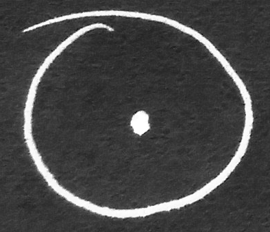
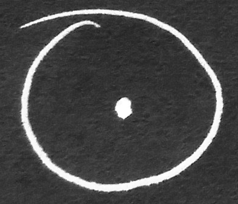
- easy for humans to recognize
- much harder for a computer!
(what rule would you write for that?)
Example: Cancer detection
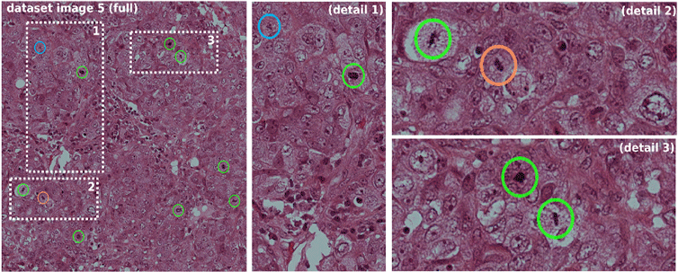
Contest on Mitosis Detection, Jürgen Schmidhuber
Can also be used for detection of new features
ML as a fitting problem
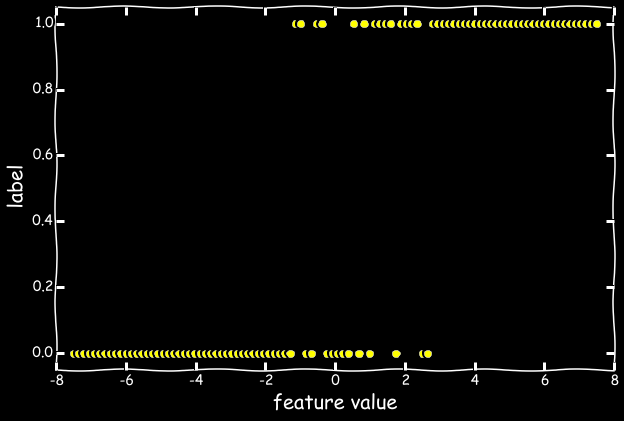
| feature |
label |
| 0.1 |
1 |
| -0.3 |
0 |
| 0.2 |
1 |
| ... |
... |
What is the correct model?
Generalization is a guiding principle
Curse of dimensionality
- Einstein is $512 \times 512$ px
- Einstein is colorful
- Dimensionality: $512^2 \times 3 = 786432$!
Curse of dimensionality - cont'd
- $d$-dimensional unit ball:
$$ V(d) \sim \frac{\text{e}^{d}}{d^{d-1/2}} \stackrel{d\rightarrow\infty}{\longrightarrow} 0$$
- $\mathbb{x} \in \text{Unif}^d(0,1)$
- Most data lies outside unit ball!
- data becomes sparse
- difficult to detect patterns!
key concepts
- Not simple curve fitting, but pattern recognition
- Model selection
- Feature selection
- Generalizablity to "new data points"
Supervised learning
- Learning from labeled data: $$f_\theta(\mathbb{x_i}) = \hat y_i$$
- Loss function:$$L = \sum_i \ell(y_i, \hat y_i)$$
- Regularization: $$R(\theta) = -\lambda_1 |\theta| -\lambda_2 \theta^2$$
- Learning as Optimization problem:
$$\theta_\text{opt} = \text{min } [L(\theta) + R(\theta)]$$
Classification And Regression
- Regression:
- $\hat y \in \mathbb{R}^n$
- example: $\ell(y, \hat y) = (y - \hat y)^2$
- Classification:
- $y \in \{0,1\}$ and $\hat y = p(y = 1 | \mathbb{x}) \in [0,1]$
- log loss (cross-entropy): $\ell(y, \hat y) = y \ln\hat y - (1-y) \ln(1-\hat y)$
- example: $\hat y = \frac{1}{1+\text{exp} [-\theta^T\mathbb{x}]}$
(Some) Supervised ML Algos
- Logistic Regression
- Decision Tree
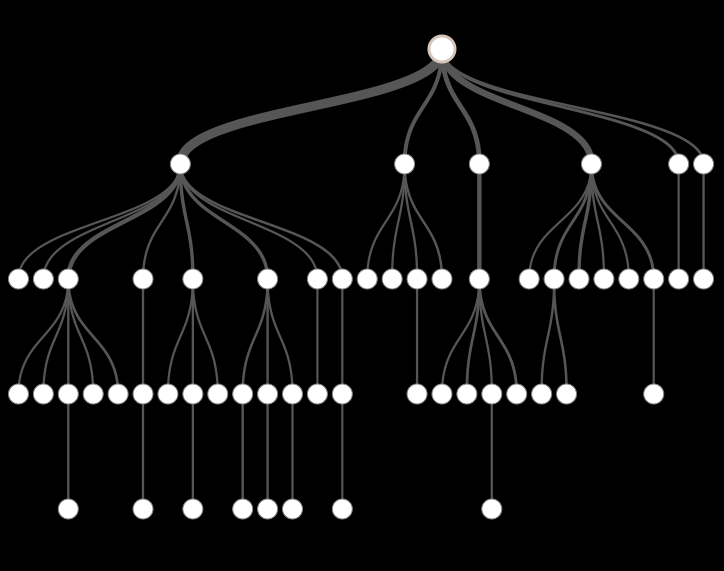
- Random Forest
- Support Vector Machine
- Naïve Bayes (for text data)
Applications in Physics
Dark Matter Mapping Challenge
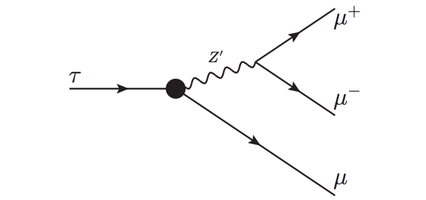
Finding $\tau \rightarrow 3\mu$ decay in LHC data
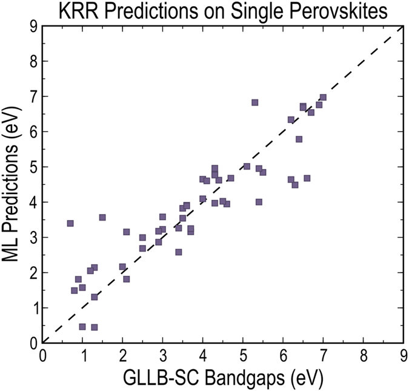
Pilana et al., Scientific Reports 6, 19375
Unsupervised Learning
a.k.a. Clustering
- What happens if we have no labeled data?
- Labeling data is expensive (human, time, money)!
- outlier detection
- segmentation problems
Clustering cont'd
- Pre-processing to "generate labels"
- Visualization of high-dimensional data when combined with dimensionality reduction techniques
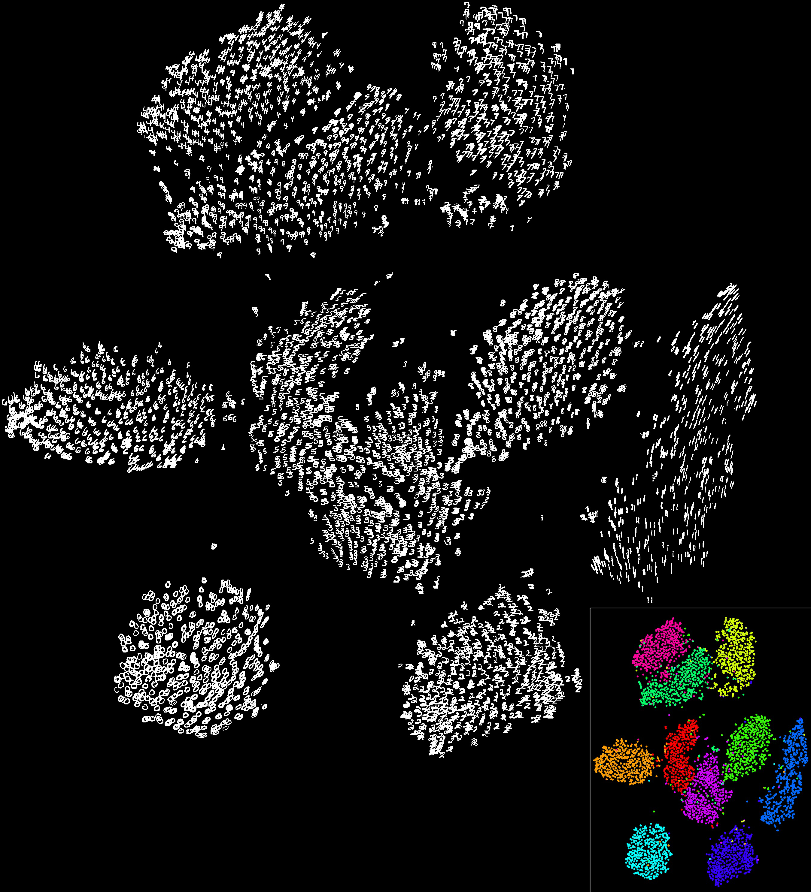
explosion of models and options
Recommender Engines
- How to recommend items to a new customer?
- Collaborative filtering (Factor analysis)
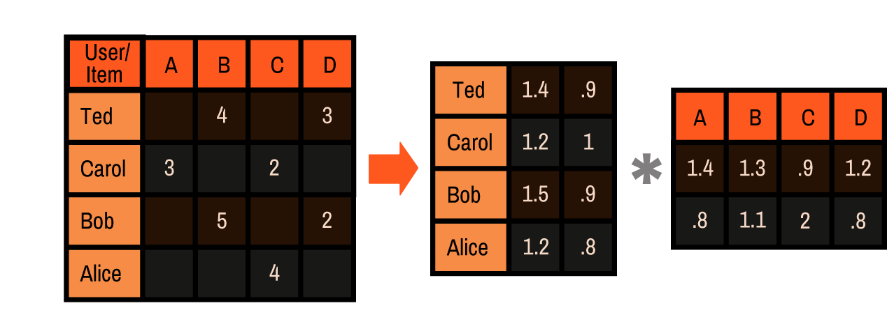
- E.g. Amazon, Netflix, Yelp, Foursquare, ...
- E.g. imputation of missing data
ImageNet Challenge
- ImageNet: $14,197,122$ images & $21,831$ categories
- Human classification error rate: $5\%$
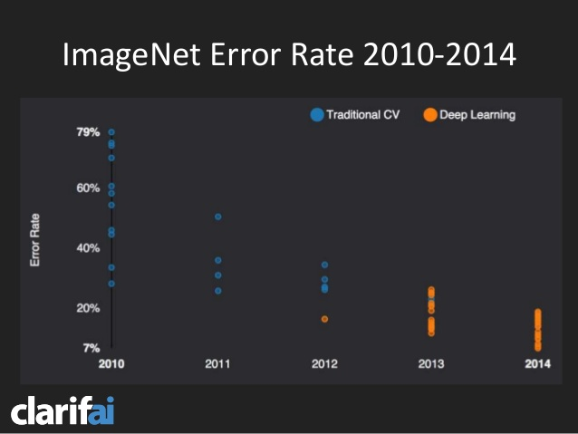
The rise of Neural Networks
- Inspired by brain neurons
- Directed graph model
- Neurons
- connection matrix $W$
- activation $\varphi$
- Classifier function:
$$y_i = \varphi \big(W \mathbb{x}_i\big)$$
How do we train it?
- Optimization using gradient descent:
$$W_{ij}^{(t+1)} = W_{ij}^{(t)} - \eta \frac{\partial L^{(t)}}{\partial W_{ij}^{(t)}}$$
- Loss function in general not convex
- Optimization can get stuck in local minimum
- Good initialization of weights leads to better results.
Problems
- Simple NN is two step process
- Any function can be approximated
- Requires exponentially many nodes in hidden layer!
Solution - Go Deep!
- Add more layers: Deep NN
- $$ y_i = \varphi_N \circ \varphi_{N-1} \circ ... \circ \varphi_1 \big(W_1 \mathbb{x}_i\big)$$
- Training still hard & time-intensive: Back-propagation
- Technological advances helps mitigate this
Understanding the NN
- Linearly inseparable classes
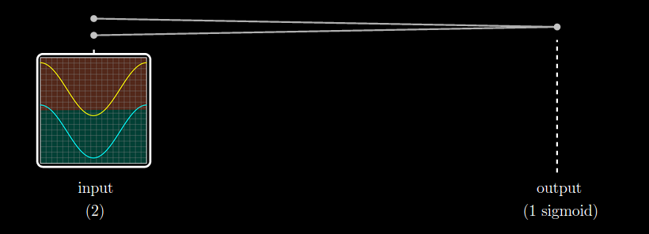
- Layers learn non-linear combinations
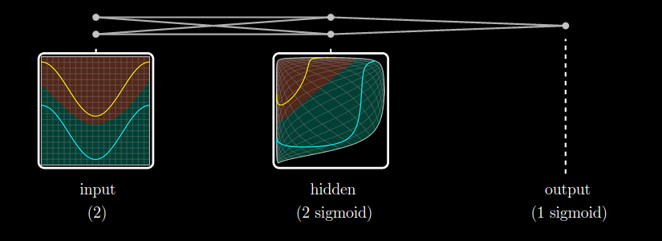
Understanding the NN - cont'd
Visualizations of images using a Convolutional NN
- Layer 1: primitive features
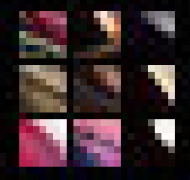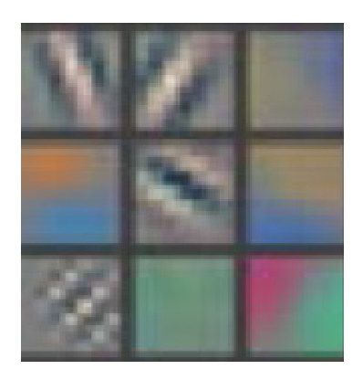
- Layer 3: simple composite features
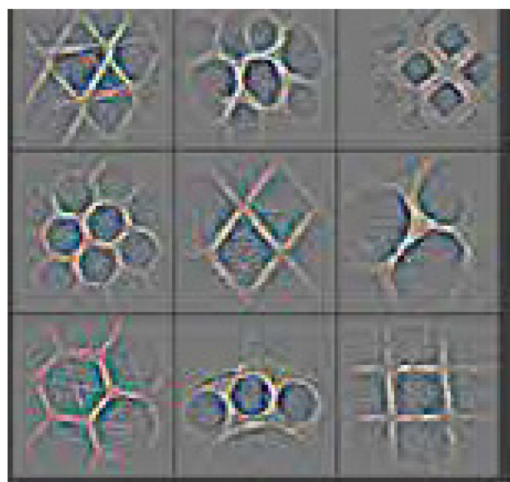
- Layer 5: complex features
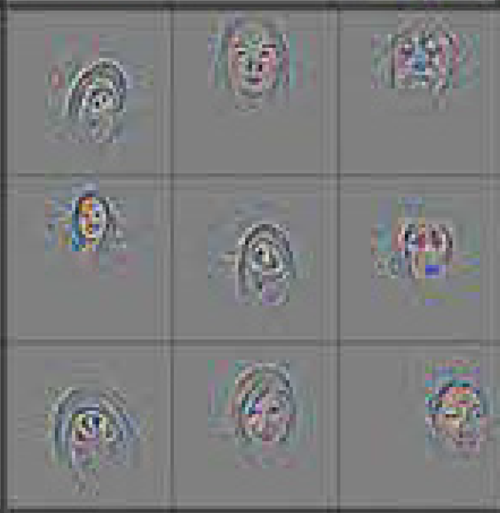
Restricted Boltzmann machines
- Unsupervised version of a NN
- probability: $$ p(\mathbb{v},\mathbb{h}) = \text{e}^{-E(\mathbb{v},\mathbb{h})}/Z$$
- energy functional: $$E(\mathbb{v},\mathbb{h}) = -\mathbb{b}^T\mathbb{v} - \mathbb{c}^T\mathbb{h}- \mathbb{h}^TW\mathbb{v} $$
- Objective: Minimize negative Log-likelihood
- Training using Gibbs sampling and Contrastive Divergence
- empirically: Great initialization for supervised NN training
Connection to Quantum Physics
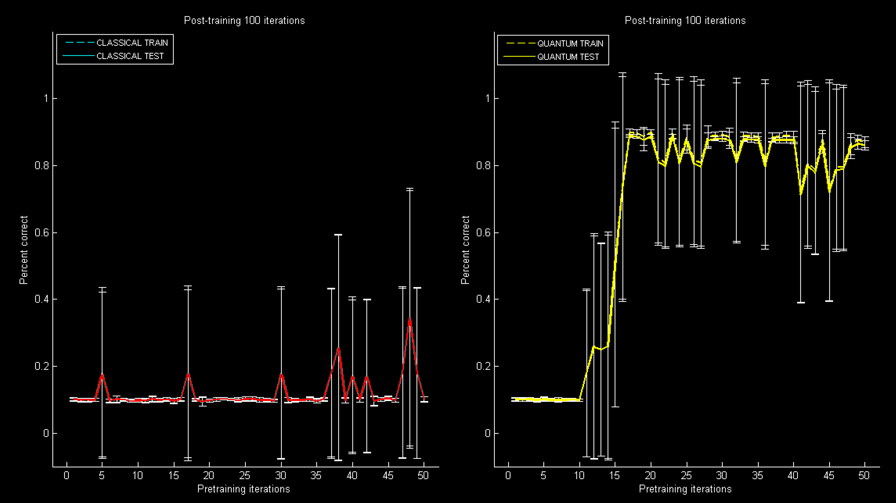
Why is this exciting?
Skype Instant Translator
Self Driving Cars
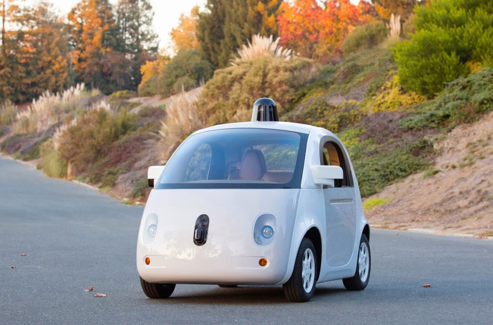
Biometrics
AlphaGo
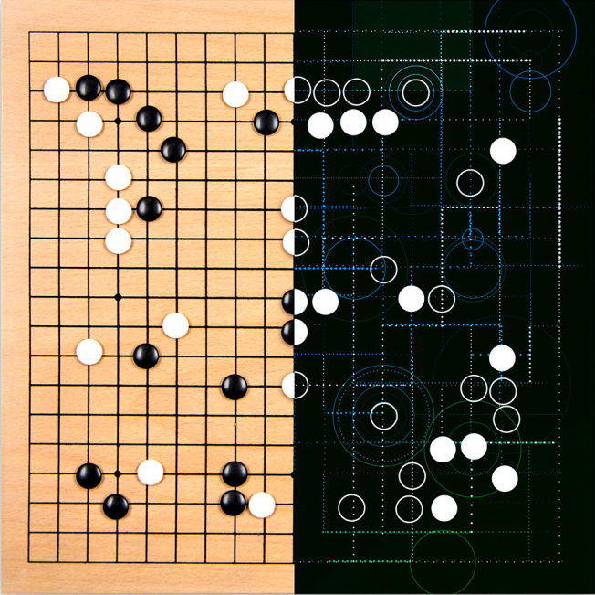
RankBrain
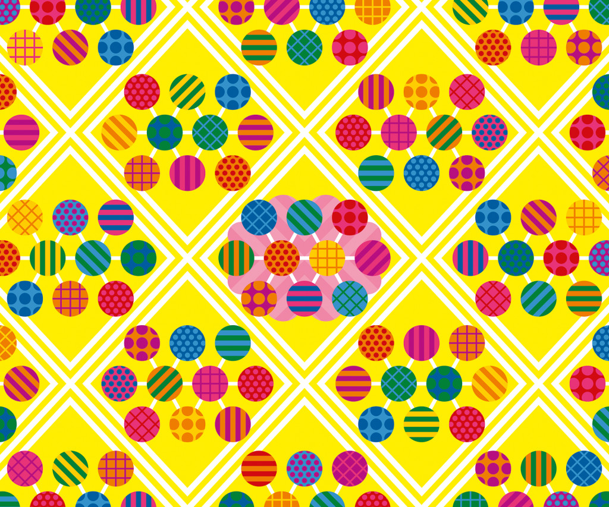
Google Translate

many more
- Health Care
- Internet of Thing (IoT)
- Online Advertisement
- Automated Trading
- Online Auction Systems (PayPal, Ebay, ...)
- Just-In-Time production optimization
- ...
- AI is already surrounding us
- AI is powerful: huge potential & risk
- Don't be opposed, but keep an open mind
- Be deliberate with your data, but not protective